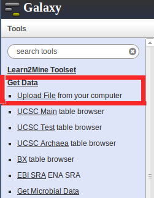
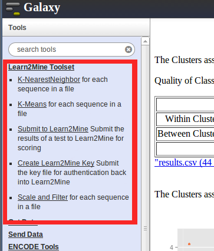
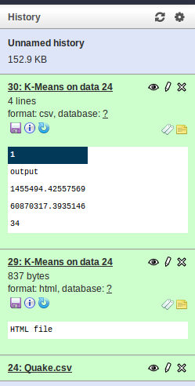
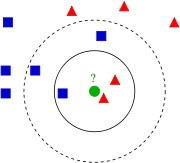

- Getting Started
- Galaxy
- R-Studio
- Techniques
- KNN
- K-Means
- Scaling & Filtering
- PCA
- Regression
- Neural Networks
- Hierarchical
- Decision Trees
- Random Forests
- Cross-Validation
- Programming
Welcome
Welcome to Learn2Mine, an Open-Source Cloud-Based Informatics Platform For Integrated Teaching and Data Exploration. Learn2Mine is a one-stop shop for analyzing and making sense of data, as well as for learning the techniques that give life and meaning to big data.
Lessons
Every technique that we offer will have an associative lesson with it (sometimes there will be more than one). Sometimes the lessons are as trivial as figuring out an optimal heuristic (just a number) for an algorithm with data provided to you, while lessons, other times, could involve writing code for an algorithm. Whenever you complete a lesson, you will have a score associated with what you did. This score is how we grade whether or not you pass a lesson, as well as being a way for us to rank you against others doing the same lesson.
Skill Tree and Leaderboards
Each user has a skill tree that keeps track of their progress. This skill tree is
located in the Profile section of the site. Initially, you will not have access to a lot of the
techniques that we have to offer. This is done in such a way that you will learn the simpler techniques first - lesson difficulty also follows a very similar manner.
In your skill tree,
when you do not have access to a technique, then that technique shows up as locked (red), when you have
access to a technique, but have not completed the lesson for that method, then that technique shows up as
still needs work (yellow). Whenever you have completed and passed the lesson for a technique, then it will
show up as learned (green). When you have shown exceptional mastery of the technique then it will show up
as mastered (blue). Sometimes technique mastery may require you to undergo lessons where you customize
algorithms in order to improve or expand upon their functionality.
Finally, when you complete a
lesson, your score is then recorded for grading. In addition to grading your score is also used to rank you
against other people that have completed that same lesson. In the leaderboards section of the site, you can
check the leaderboards for each of the lessons. We keep track of the top 10 scores for each lesson.
Open Badges
During your progression here you will be able to earn badges in order to show off your progress within Learn2Mine and on your own site. We implement Mozilla's Open Badges. Open Badges allows you to collect badges from a multitude of academic services on the Web. Once you start earning badges, you will be able to access them in your backpack. To view your Learn2Mine badges within our site, you will need to create a "Collection" named "Learn2Mine" on the backpack site. Unfortunately, you cannot create a collection until you have earned at least one badge. Also, you will need to tick the checkbox that makes your collection public, otherwise we will not have access to your badges for displaying purposes. Typically, badges will represented remarkable success in learning algorithms and data science techniques here.
Uploading Data
Galaxy is our back-end framework for Learn2Mine so now we will briefly show you how it works. When you are going through lessons you will be required to upload data in order to perform various analyses. The data files are supplied to you on a lesson-by-lesson basis. When you start a lesson you will be redirected to Galaxy. On the left-hand side of Galaxy is a list of tools that you can use. Right now we will be focusing on the "Get Data" toolset. Once you have clicked "Get Data" you will have the option to upload a file from your computer and this is when you would submit the files you received from Learn2Mine. When you have submitted these files, they will appear on the right-hand side of Galaxy as "jobs." Typically, you should not need to specify a datatype as Galaxy will auto-select the correct format. Files that are uploading to Galaxy appear as blue whenever they are in the process of being uploaded and green whenever they are done being uploaded.
Using Our Tools
As you likely saw whenever you navigated to the "Get Data" toolset there is a special set of tools that we have created for your use. When you open up the "Learn2Mine Toolset" you will see a list of algorithms and a few other specialized tools. The algorithm-specific tools are discussed in each of their sections here on the Lessons page. Right now we will focus on the other tools to further your understanding of Galaxy and our integration with it.
The "Submit To Learn2Mine" tool is how you will actually pass information from Galaxy to Learn2Mine. This tool will ask you for the key you created (this will be explained in the next section), the algorithm output file, and the type of grading you want conducted. The type of grading you want conducted comes straight from the lesson you are undergoing. For example, you would use the K-Means Grader if you were conducting a lesson on the K-Means algorithm.
Lastly, we have extra descriptions how to use our tools and common mistakes at the bottom of each tool's input page.
Using The Job History
So you understand what information you need to pass to various tools in Galaxy, but how exactly do you do this? Galaxy keeps track of every job you perform in the right panel. You can use the output of these jobs as inputs to new jobs. As aforementioned, you need to feed your Learn2Mine key to the "Submit to Learn2Mine" tool. After you have created the key inside of Galaxy, you can select your key as an option in the "Submit to Learn2Mine" tool. It will be referenced by the job number and name (Key in this case). This works in the exact same way that you would give data to your algorithms.
In addition to using past jobs to conduct new jobs, the history serves another useful function. Whenever you run an algorithm here it is always useful to have meaningful, graphical output. We dynamically generate HTML pages that format output for your algorithms. As you will see, Galaxy will output two jobs when you conduct algorithms. For example, K-Means Clustering will output an HTML page and a results file. If you click the eye next to the HTML page job, then you will see the HTML output in the main panel of Galaxy. If you were to click results, then you will see some identifiers of your output. The HTML output we give you will usually have labels such as "Principal Component X" on the axes. This is because the data we are working with is impossible to view because of how many features exist in the data. We conduct Principal Component Analysis, a dimensionality reduction technique, in order to give you the most meaningful output possible in the HTML.
Your Key
The "Create Learn2Mine Key" tool is vital for keeping track of your progress. We use this key in order to persist your results and score so that we can store your success in our database, as well as giving you access to new tools and adding you to our leaderboards. This key is uniquely generated whenever you first sign in to Learn2Mine. The "Create Learn2Mine Key" tool asks for your key for these reasons and you can find your unique key below. Please do not share your key with anyone else as it is how you are uniquely identified.
{{session}}
If you feel that your unique key has been compromised, then click here to generate a new key. Please note that you will need to recreate your key with the "Create Learn2Mine Key" tool in Galaxy after doing this.
FAQs
My job seems to be running forever <- Usually just restarting the job or conducting a different job will push the job through and finish it. The only time you might have to exit the job and completely retry it is when using the upload data tool. Signs of this typically include jobs being hung up whilst they are colored blue (unique to upload data) or grey (job not running).
What Is R?
R is a programming language that is specialized for the implementation of statistics and modeling. R is open-source and runs on a multitude of platforms. There are many free packages and suites within R and there are even more available libraries that have a large, dedicated group of developers. The algorithms in our lessons are coded in R and whenever you start customizing and running your own code it will also be in R.
For more information, please visit R-Project
What Is RStudio?
RStudio is an IDE (integrated development environment) for modifying and executing R code. We have our own instance of RStudio on our server and you will be able to log in to RStudio and run code on the fly. The IDE has its own output frame so you will not have to install any dependencies for RStudio to work on your machine since it is handled entirely in the cloud. Additionally, the graphics that we utilize run optimally in RStudio as the developers of RStudio also created the graphics library we adopted.
For more information, please visit RStudio
Custom Code & Modifications
We have created a git repository that contains framework code that we aim for you, our users, to modify in order to demonstrate topic mastery. When you log in to RStudio (authentication information is in the next section) you will want to start by grabbing this code we have prepared for you. From the menu bar, select "Project", then "Create Project". From there you will select "Version Control" and then "Git." In the "Repository URL you will enter: "https://jldierks@bitbucket.org/jldierks/rstudio-test.git" The other options are for use by you. Your project directory will be important for transferring information back to Learn2Mine.
Once you have created some custom code, you will want to send files back to Learn2Mine for grading. For example, if you customized a K-Nearest Neighbor classifier and you want to submit it for grading, then you will go to the KNN tool in Galaxy and select "Yes" on the custom code radio button. After this, you will be required to input the path to your custom KNN file. Your file, however, will have been saved on our server. This server utilizes your username for RStudio and the directory you need to key in will look as follows: {{rstudioUser}}/path/to/project/myCustomFile.R
Your Authentication
Here we provide you with authentication information for you to use our server instance of RStudio. Your username is based upon your Google account and your password is based upon your unique key that you used in Galaxy.
Username: {{rstudioUser}}
Password: {{session}}
Learning
Data comes in many different flavors. Sometimes you will have data that you are very familiar with and you want to use that data in order to learn about new data you collect. Other times you may have lots of useful data, but it is difficult to determine what in the data is even meaningful. Regardless of the type of data you collect, there will always be different algorithmic approaches in order to make sense and learn from the data. Here we will discuss the two main approaches to machine learning.
Supervised Learning
Supervised Learning is a type of learning that encompasses algorithms and techniques where you are presented with training data for which you know the correct classification. This training data is used to create a generalization for new, testing data. If the training data is 'trained' well, then the training set will be able to generalize and classify unknown data with a minimal error rate. There are techniques that handle working with different types of data (i.e. continuous vs categorical); some algorithms can handle all types and others may specialize and only work with one type.
Unsupervised Learning
Unsupervised Learning, sometimes called density estimation, is a type of learning where correct classifications, or responses, are not given. This does away with the idea of training and testing data as seen in supervised learning. The goal of unsupervised learning is to group data together based on similarities, commonly done through clustering algorithms.
Optimization
In many advanced lessons here you will be presented with a problem that needs optimizing. For example, in the first advanced lesson (For K-Nearest Neighbors) you are required to weight features of a dataset in order to create an improved solution. Oftentimes brute-forcing a solution might not even be possible or could be more hassle than it is worth. Instead, tackling a problem like this can be handled with optimization techniques. Optimization techniques tend to find a great solution, but not necessarily the best solution - and that is perfectly fine. Techniques you might want to research in order to conduct optimization include Hill Climbing, Simulated Annealing, and Genetic Algorithms. We recommend the use of the GA package for R as it is what we utilized to optimize our KNN classifier and Genetic Algorithms, while more complex, are very powerful techniques once you understand how to use them.
What Is K-Nearest Neighbors?
K-Nearest Neighbors (KNN) is a basic classification algorithm. KNN is a lazy (generalizing past the training data is pushed off until a query is made to the system), non-parametric algorithm (the data does not belong to a particular distribution). Typically, KNN uses euclidean distances to measure between points. In a training set, the scientist has data and knows the classifications of points. This data is fed into the KNN algorithm as training data. Whenever a datapoint without a classification is sent to the algorithm, then the data is tested on the aforementioned training data.
Efficiency
To reiterate, KNN is non-parametric and thus makes no assumptions about data distribution. This is useful because real-world data tends to not fall into nice distributions that other algorithms may assume. Additionally, KNN is lazy, making it a costly algorithm: whenever testing occurs on new data points, KNN needs to use every single training point in order to classify. So, KNN does not cost many computational resources to train a set of data, but testing comes with a higher cost.
Optimizing K
First, the K in KNN represents how many neighbors used in order to classify new points. Consider the following image:  In this example, the green circle is a new datapoint and the squares/triangles are the training data. The dark circle is what to consider when K = 3. The inside of this circle contains the 3 closest neighbors to the new datapoint. There are two triangles and one square so, by majority, the new datapoint is classified as a triangle. Now consider the dotted line. The dotted line represents K = 5 since there are now 5 neighbors. With three of the neighbors being squares and two being triangles, this time the datapoint is classified as a square. So, as you can see, altering the K value can alter the classification of new, "test" points. There are tradeoffs for using high and low numbers for K. Low numbers tend to specialize the data and make points over-influential and high numbers tend to broaden the data and make points under-influential. A lot of times, it helps to visualize the data to understand it better. Otherwise, though, the data may require domain expertise in order to make the best decision.
Lesson
Datasets Required: Diabetes Training Set
Diabetes Testing Set
Our KNN algorithm utilizes two datasets: a training set and a testing set.
You can observe how the test data can vary by manipulating the value of K. This is a
very basic lesson insomuch that you will be observing what happens when doing this.
First, you will upload the provided diabetes datasets to Galaxy (see Galaxy tab). Then,
you will select the KNN tool from the Learn2Mine tools in the left panel of Galaxy.
Galaxy will prompt you to input a value K and Galaxy will prompt you to select data
that you have previously uploaded to Galaxy. Once you have completed this, you will see
a KNN job pop up in your history on the right. This file is then sent to the "Submit To Learn2Mine"
tool - this is how you will be graded.
Advanced Lesson
Datasets Required: Diabetes Training Set
Diabetes Testing Set
This next lesson will allow you to earn KNN Mastery, so get ready to do some coding!
You likely received a score in the high 70's or low 80's in the previous KNN lesson, but now you are going to do better than that. Using the same dataset, we want you to write code in RStudio to figure out how to get a higher KNN score (accuracy). You will not be able to do this by simply changing the value of K. You need to think about the variables for this dataset at hand. Some of the variables are likely to explain more about the classification of a person. A way to represent this algorithmically is to multiply the column (or feature) of the dataset by a number. For example, multiplying a feature by 2 yields a KNN classifier that puts 2x weight on that feature. We do not expect you to simply use trial-and-error to figure out what weights will give you a good accuracy. Instead, however, we want you to create an algorithm that will give you the weights that you want to use for each feature. After finding these weights, use our KNN backbone code (access to this is explained in the RStudio tab) to program the weights in. You can then run the KNN classifier using your custom, weighted code and, if your score is good enough, then you will have proven that you have mastered the KNN algorithm. For help creating an algorithm to find these weights for you, see the Optimization section in the Techniques Tab.
What Is K-Means?
K-Means is one of the most widely used clustering algorithms. We will be working
with one of the more popular versions of the K-means algorithms: Lloyd's algorithm.
The K-means algorithm requires users to give it a set amount of clusters in order to start.
The algorithm then selects random datapoints to be the cluster centers (or centroids). Each
datapoint is then iterated over in order to find the centroid closest to it. Once this centroid
is found, then that datapoint is set as belonging to the cluster associated with that centroid.
Once this is done for each of the datapoints, then new cluster centers are found. The process
of assigning datapoints to clusters is then repeated. The algorithm terminates when
consecutive iterations of the algorithm produce the same cluster assignments or whenever a
maximum number of iterations is reached.
All this considered, K-Means is an np-hard problem with complexity O(nfk+1*log(n)) where f is the amount of features in the dataset, k is the amount of clusters, and n is the amount of datapoints.
Illustrated Example
Now imagine that you are given a dataset (with three clusters) with the initial cluster centroids already decided. Here the red, blue, and green circles are centroids representative of the three clusters. So the next step is to classify each of the grey squares as to being a part of a single cluster, via euclidean distance. From the datapoints (and centroid) a voronoi diagram can be produced (Don't worry, this is not part of the lesson). The voronoi diagram shows which datapoints belong to which clusters, indicated by color. The next step in the process is to move the center of the cluster to the center of the datapoints within the cluster. So the cluster center is in a new location so the process is repeated until termination, as prescribed in "What is K-Means?"


Optimizing K
The goal of K-Means Clustering is to try to group your data while maintaining a balance between number of clusters and the uniformity within those clusters. The more clusters you have, the more specialized they will be. However, more specialized does not necessarily mean better, as too many clusters can lead to divisions between points that are more similar than now. Therefore, evaluating performance of a K-Means test can be a bit arbitrary, but the test should strive to find an optimal balance between keeping the Sum-Of-Squares Error between clusters high, and the Sum-Of-Squares Error within clusters low.
Lesson
Dataset Required: Earthquake Data Set
What Is Scaling And Filtering?
Now we will be working on performing techniques that will modify data. Often data will have missing values and outliers or the data may need scaling in order to reduce bias. We are providing you tools that will enable you to delete missing data, delete outliers, and scale data.
Dealing With Missing Data
Missing data occurs often with datasets for many reasons (such as data involving temperature - someone may forget to record data for a day). Sometimes using the data that is there in lieu of the missing data is still very valuable, but sometimes that data becomes useless without key variables. This will become very apparent in the upcoming lesson. Also, you may have algorithms written in such a way that all the data is required to be present in order to effectively produce meaningful output.
Dealing With Outliers
Outliers are very fickle beings in datasets. There are many beliefs on whether or not excluding outliers is a fair way to modify data, but having the option is important. Our tool will give you the option to exclude outliers based on a z-score (effectively the amount of standard deviations away from the mean a datapoint is). This exclusion is based off of every single feature of a datapoint. So if you select a z-score of 3.0 and the datapoint has a feature that goes over the third standard deviation, then the entire datapoint will be considered an outlier and will be thrown out.
Normalization
Scaling is a way to normalize data. The scale option within our tool will center your data and scale each feature of the dataset, normalizing your data. This will accomplish a reduction in bias. So features will large amounts of variance will not skew data or be over-emphasized in results. Also, scaling assumes you fit the statistical requirements for normalization (typically you need at least 30 datapoints).
Lesson
Dataset Required: Vertebral Column Data Set (Edited)
For this lesson, you'll be using a dataset filled with outliers and missing data. Upload the above dataset into Galaxy,
then filter it in the following ways:
- Delete all data missing 10% or more of their fields
- Remove any data that contains a field with a z-score of higher than 2.5
- Scale the data
These are some pretty harsh rules we are weeding through this data by, and in the real world you'll want to be more cautious with your datasets. This lesson is just to illustrate the idea of filtering data.
(NOTE: The dataset above is a trimmed version of a full dataset, with a few random values deleted from it to fit our purposes. If you'd like to
see the full dataset, you can download it below!)
Vertebral Column Data Set (Full)
What Is Principal Component Analysis?
Principal Component Analysis (PCA) is a dimensionality reduction technique. You may have noticed the references to "Principal Components" in outputs of your previous lessons. We performed this technique so that you would be able to visualize your output. For example, if you did the KNN lesson, then you were working with a problem who's data would have taken 7 dimensions to visualize because there are 7 features in the Diabetes dataset. PCA, however, gets around this by figuring out how much of the variability of the dataset is explained by each feature. For each feature, there is a principal component that is created. The first principal component is the one that points along the axis of greatest variance. If you add the "variance explained" from each principal component of a dataset, then you will get 100%, but then you have not gained anything by using PCA as you will have the same amount of dimensions as before. So, in practice, you will typically use two principal components for visualization and more for analysis depending upon your problem-at-hand and your dataset. When you visualize your data this way, then your data is projected onto the first two principal components. This will lead to visually shocking results when dealing with clustering algorithms. This is because the clusters may be linearly separable in higher dimensions, when considering all the data, but clusters will not look correct whenever projecting down to only two features.
A Glimpse At The Algorithm

When finding principal components, a PCA algorithm creates a covariance matrix. This matrix relates each feature with all the other features and itself in order to find the axis with the greatest spread (variance). For those with linear algebra experience, the eigenvectors of this matrix point in the direction of the axes with the greatest spread, referred to as principal axes. The eigenvector with the highest eigenvalue is the eigenvector pointing the direction of greatest variance. After doing this, PCA projects the full data onto the principal components that it is using (amount can vary). At this point, the principal components can be used to visualize the data.
On the left you will see a two-dimensional dataset. For example purposes, let's try and get the principal component so we can project the data onto one dimension. You can see what the spread is for each of the principal components that have been drawn out for you. The v1 axis has a much higher spread - the datapoints are much more spread out than in the v2 direction. This is evident when considering the normal curves along each of the principal axes.
Lesson
Dataset Required: Earthquake Data Set
This lesson will not require a lot of work from you, but, rather, we are asking that you pay a lot of attention to the results and take the meaning away from it. You will be using the Earthquake dataset. There are only four features in this dataset so there will only be four principal components. Pay attention to the file to check if there is a header so you know what to pick for that option in the PCA tool. Upon viewing the html output of PCA, you will see an output that consists of the "Percent Variance Explained" by each principal component (these will total to 100 if you add them as we are showing you every principal component). Following this, we give you the standard deviations (√ Variance ) of each component. Lastly, we output a screeplot - a way to view the percent variance explained for the principal components graphically. In order for us to make sure you followed the instructions and performed PCA correctly, we output a second file, much like in the other lessons, for you to submit to us using the "Submit to Learn2Mine" tool.
What Is Regression?

Regression is a statistical technique which predicts a response (dependent variable) from given features (independent/predictor variables). There are a multitude of regression techniques. In Statistics classes you typically will learn the Ordinary Least Squares model of regression, which minimizes the sum of squared distances between the regression model and actual datapoints (minimizes the residual). So the purpose of regression is making a prediction conditioned by the features of the dataset. As data scientists, we would like to work with a powerful form of regression. We will be using Partial Least Squares Regression.
Partial Least Squares Regression
Partial Least Squares Regression (PLS) finds a linear regression model by projecting the features and response into a new space. A PLS model will look into this new space and attempt to find the direction in the feature space that explains the maximum variance direction of the response space. This is all done in multiple dimensions and it is a lot simpler to think about PLS as applying PCA techniques to the features of regression. PLS is tailored to work in a starkly different manner than typical regression models - PLS functions better whenever there are more features than observations and when there exists multicollinearity between the features. This is because PLS utilizes not only observed variables (directly measured), but also latent variables. These latent variables are not directly measured, but rather are pseudo-observed variables because they are inferred from the observed variables. So one of the tradeoffs that PLS receives is that the data's dimensionality is significantly less than it could be due to the use of the latent variables.
For more detailed information, see this article
Lesson
Dataset Required: Basketball Dataset
For this lesson, we want you to predict the amount of shots that a basketball player makes per minute, based upon a player's assists per minute, height (in cm), age, and time played. We are providing you with a full dataset. The PLS tool asks you how much of your data you want to turn into testing data. Keep in mind that you do not want to get rid of too much data as to make your regression model really weak, but you also do not want to overtrain and leave yourself with nothing for which to test. Our grader for this lesson takes into account how much data you used for testing, so keep that in mind when deciding. Your goal is to reduce the mean squared error of the residuals of the test data matched against your trained regression model. You also get to decide which evaluation method you want to use for your model. This does not matter so much for this lesson because we are grading you based upon the percentage you enter. For your own knowledge, though, 10-fold cross validation divides the data into ten segments and evaluates your model based upon 10% of the data and Leave-One-Out cross validation leaves on test point out to evaluate your regression model. These evaluation techniques run multiple times to reinforce your model's strength.
More information on our PLS implementation available here
What Are Neural Networks?
Oftentimes referred to as a Multi-Layer Perceptron, Neural Networks (NN) are used in order to predict a response variable from given features. Unlike regression, however, NNs use a very unique method of evaluating the predictors. Some NNs are written in such a way that class labels (commonly represented by 0's, 1's, etc.) are output from a series of calculations, while other NNs may be used to predict a real, continuous value.
The predictors are broken up into individual predictor variables and are fed into the NN as input. These inputs are fed into what are referred to as 'nodes' and then they progress through the NN, being fed through more nodes until the output, or outputs, is reached. For example, an input is
Neural Network Terminology
Hidden Layers:
Repetitions:
Activation Function:
Behind The Scenes
Back-Propagation:
Forward-Propagation:
Lesson
Dataset Required: Basketball Dataset
For this lesson, we want you to predict the amount of shots that a basketball player makes per minute, based upon a player's assists per minute, height (in cm), age, and time played. We are providing you with a full dataset. Our NN tool will utilize of the data for training your NN and then it will evaluate itself by running the training data through it again. Something that should bother you at this point is the fact that a minimal error could very easily be the result of your NN being overtrained. This is a very important thing to consider whenever making your NNs. Remember that more hidden layers and nodes tends to create a NN that is more closely tied to the training data. When you input your hidden layers in our tool, we are expecting comma-separated values. For example: 4,2,3 would represent 3 hidden layers with 4 nodes, 2 nodes, and 3 nodes (not including the bias node), respectively.
More information on our NN implementation available here